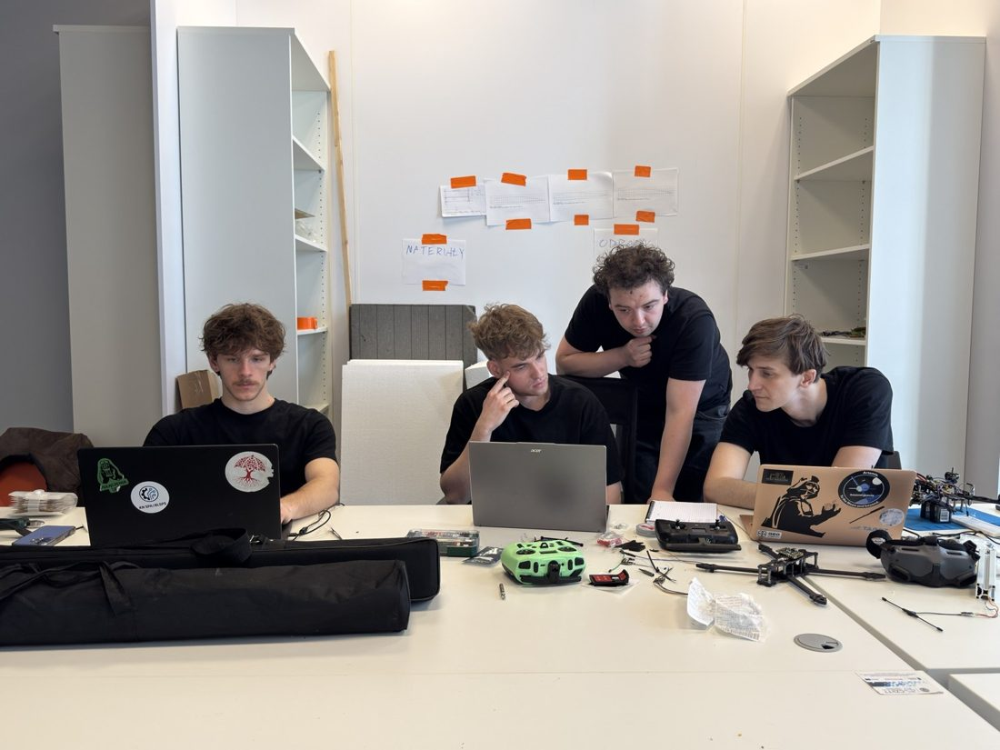
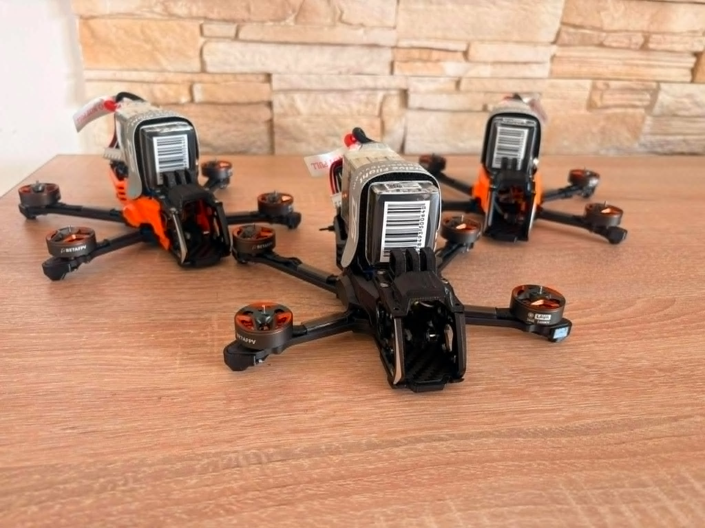
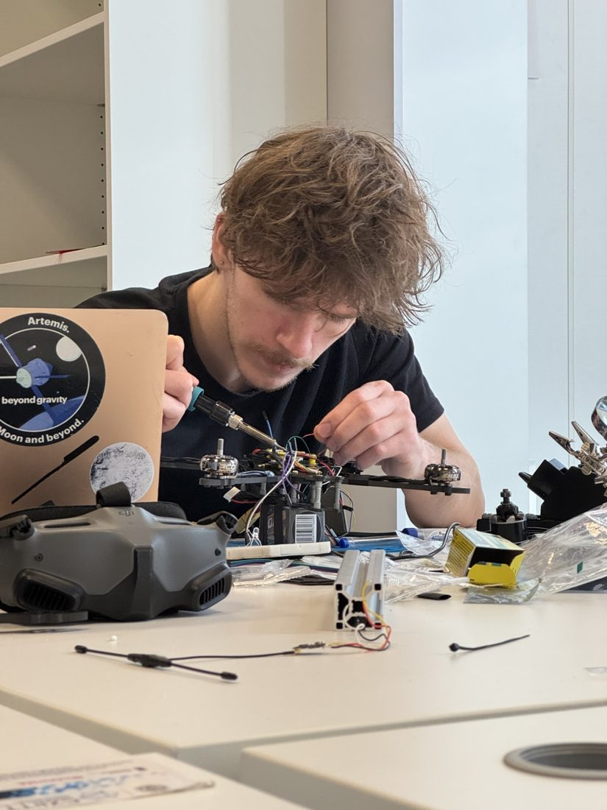
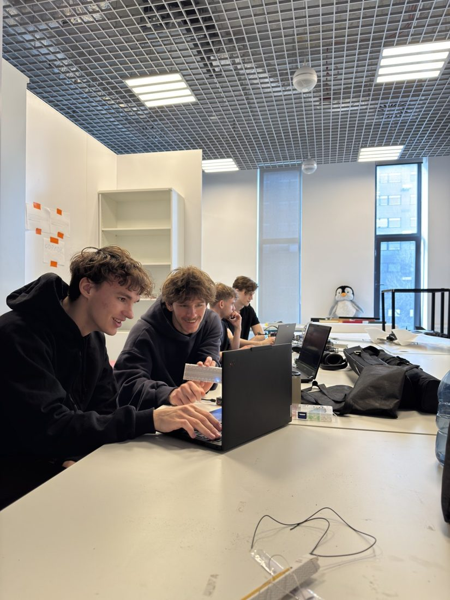

Koło Naukowe Systemów Pomiarowych i Automatyki · UW
Od oceanów po stratosferę
Pięć projektów, jeden cel: autonomiczne systemy, które zbierają dane tam, gdzie człowiekowi trudno dotrzeć.
Projekty
Pięć misji, pięć środowisk
Każdy projekt ma własny zespół, własną kolorystykę i własną zakładkę.
Kim jesteśmy
Studenci, którzy budują sprzęt od zera
Jesteśmy kołem naukowym Uniwersytetu Warszawskiego. Projektujemy elektronikę, piszemy oprogramowanie i testujemy nasze systemy w terenie: od basenu po lodowce Svalbardu.

Galeria
Z warsztatu i z terenu


RoboSub 2026
Svalbard
stoisko na targach

testy w basenie
start balonu Hawk Eye
warsztaty w liceach
Newsroom
Co u nas słychać
Zespół
Ludzie za projektami
Studenci informatyki, matematyki, fizyki, inżynierii i zarządzania. Każdy projekt prowadzi własny zespół, a zarząd dba o to, żeby wszystko działało razem.
Partnerzy
Razem dolatujemy dalej
Dziękujemy instytucjom i firmom, które wspierają nasze projekty sprzętem, wiedzą i finansowaniem.
Partnerzy


Wsparcie


Współpraca
Chcesz wspierać studenckie badania?
Oferujemy widoczność na zawodach i targach, wspólne projekty badawcze i kontakt z utalentowanymi studentami.
Kontakt
Porozmawiajmy
Pytania o projekty, współpracę albo media? Najszybciej złapiesz nas mailowo lub na Instagramie.
- kontakt@knspa.mimuw.edu.pl
adres do potwierdzenia - Adres
- Wydział Matematyki, Informatyki i Mechaniki UW
ul. Banacha 2, 02-097 Warszawa - Współpraca i media
- Marketing & Partnerships
[e-mail do partnerów]